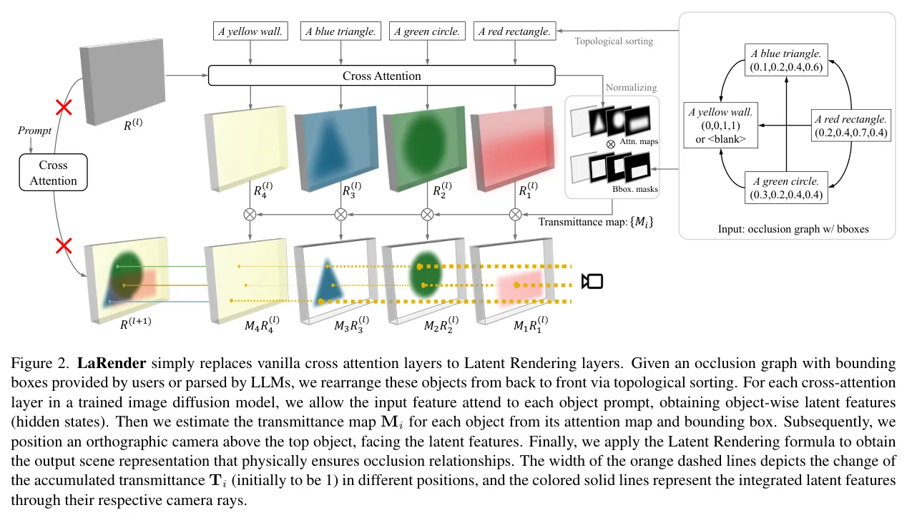
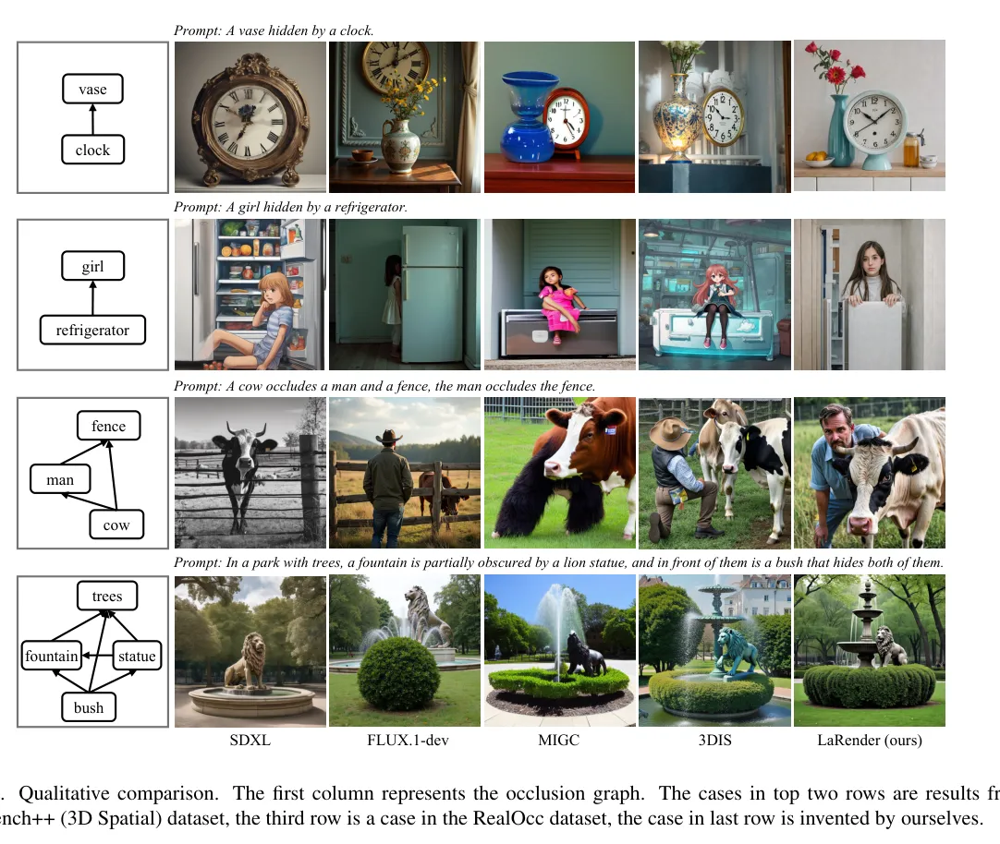
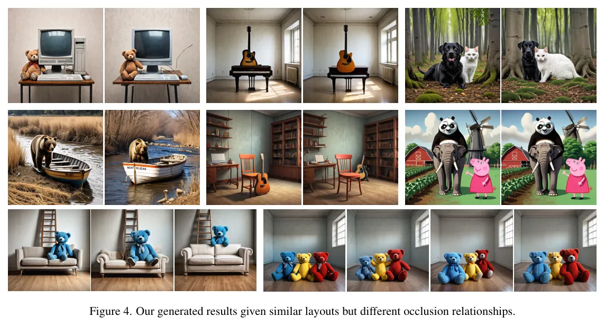
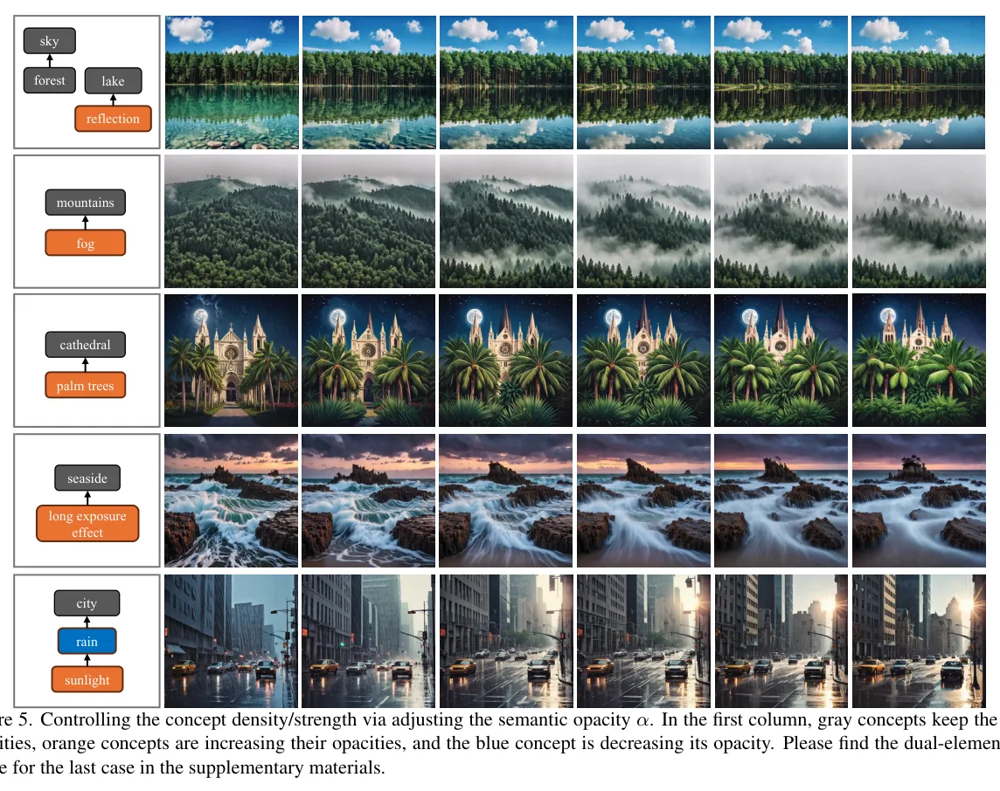
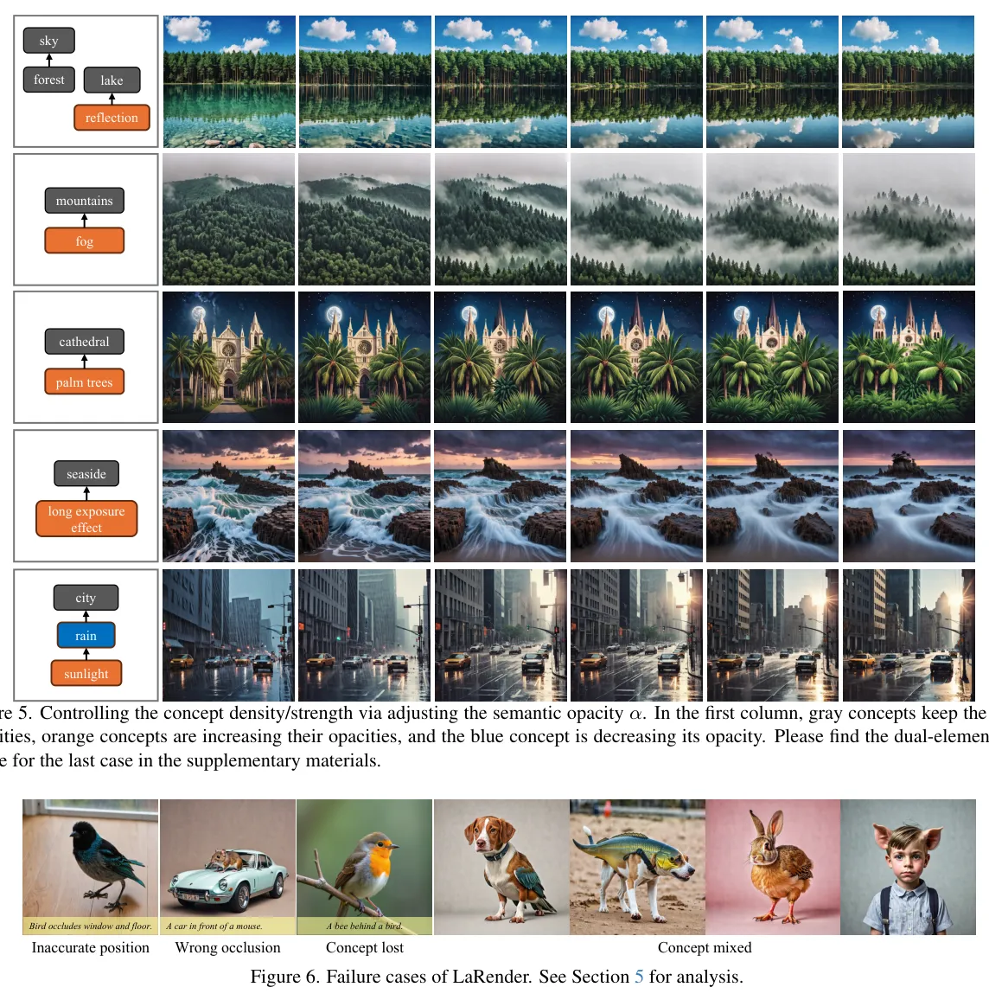

批量精读初稿（基于本地 PDF 全文 41.3k 字符 / 10 页提取）。最后更新 2026-06-21。
① Abstract（摘要）逐句精读
原文逐句 + 中文指路：
1) "We propose a novel training-free image generation algorithm that precisely controls the occlusion relationships between objects in an image." → 一句话定位：免训练地精确控制图中物体间的遮挡关系。
2) "Existing image generation methods typically rely on prompts to influence occlusion, which often lack precision. While layout-to-image methods provide control over object locations, they fail to address occlusion relationships explicitly." → 痛点：文生图靠 prompt 控遮挡不精确；布局生图能控位置但不能显式控遮挡。
3) "our method leverages volume rendering principles to 'render' the scene in latent space, guided by occlusion relationships and the estimated transmittance of objects." → 核心：借体渲染(volume rendering)原理在潜空间"渲染"场景，由遮挡关系与估计的透射率引导。
4) "This approach does not require retraining or fine-tuning the image diffusion model, yet it enables accurate occlusion control due to its physics-grounded foundation." → 不重训/不微调，靠物理根基实现精确遮挡。
5) "by adjusting the opacities of objects or concepts during rendering, our method can achieve a variety of effects, such as altering the transparency… the density of mass (e.g., forests), the concentration of particles (e.g., rain, fog), the intensity of light, and the strength of lens effects." → 调"不透明度"还能控透明度/植被密度/雨雾浓度/光强/镜头效果。
为什么重要："Precise occlusion control ensures that objects are correctly layered and interact in a visually coherent manner, which is essential for creating realistic and immersive scenes."（广告、概念设计、复杂场景） 路一·文生图靠 prompt：如"a dog behind a cat, and a bird is in front of the cat"，但 "even the state-of-the-art method [FLUX] performs poorly in occlusion control, especially in complex scenes with multiple objects occluding each other." 路二·布局生图(bbox)：能生成复杂场景，但 "due to the complexity of the occlusion phenomenon, these methods cannot accurately control the occlusion relationships. As shown in Figure 1(1), each object shares the same bounding box in different occlusion cases."——同样的 bbox 对应多种遮挡，bbox 区分不了。 路三·训练条件模型："requires additional paired data of images and ground-truth occlusions, which are often expensive to collect."——要昂贵的"图像+遮挡真值"配对数据。
③ §1 Introduction · 核心洞察 + solution
关键洞察："The occlusion phenomenon shares the same essence as 3D rendering, whether from the perspective of human vision or a camera."——遮挡与 3D 渲染同源（相机/人眼成像本就是"近的挡远的"）。 solution："we propose a non-parametric Latent Rendering mechanism that replaces vanilla cross-attention layers of a pre-trained image diffusion model." 流程：给定遮挡图 → 拓扑排序物体由底到顶 → 重排物体 latent（denoising 网络的 hidden states）→ 架一个面向 latent 的虚拟相机 → 执行 Latent Rendering（体渲染原理但作用在 latent 而非像素）。"latent features of objects are integrated according to physical rules that consider both occlusion relationships and object transmittance."
③b §2 Related Work · 与四类方法的定位差异
① 布局生图(Layout-to-image)：用 bbox 控物体空间布局。部分(GLIGEN/MIGC 等)"fine-tune diffusion models using datasets with bounding box annotations, such as MS COCO"；3DIS[46]"generates depth maps first, then renders textures from depth"，但 "depth does not equate to occlusion, and object depths remain uncontrollable."——深度≠遮挡，且深度本身不可控。LaRender 虽用 bbox 算透射率，但 "it prioritizes occlusion control over precise positioning"，与布局控制是正交关系。 ② 场景图生图(Scene graph-to-image)：有"in front of / behind"等关系，但 "these concepts focus on relative spatial positioning rather than the occlusion from the photographic perspective." 反例："'a boy standing in front of a girl' can be a scene where they stand face to face, one on the left and the other on the right, with no visual occlusion."——"前后"是空间相对位置，不等于成像视角的"遮挡"。且这类方法依赖场景图标注。 ③ 多层图像生成(Multi-layer)：MULAN[33] 出 RGBA 分解数据集、Zhang et al.[41] 在 1M 透明图层对上微调 latent diffusion、LayerFusion[7] 生成前景/背景/混合图，"these methods are not designed for complex scenes with multiple occluding objects." ④ 3D-aware 生成：π-GAN/EG3D 等把可学体/triplane 装进 GAN 生成多视角一致图，但 "typically limited to constrained domains such as faces, cars, or animals"；ViewDiff[11] 用多视角监督+体渲染更通用。本文不同："a non-parametric volumetric rendering mechanism applied in the latent space of diffusion models, enabling generating complex scenes in a training-free manner." 并且从生成视角看，"We are the first to address this challenge [occlusion handling] in the generative domain."
📚 背景知识：体渲染 / NeRF / cross-attention
① 体渲染(Volume Rendering)[8]：一条相机光线上像素颜色是"沿光线对 体密度×颜色×累积透射率 积分"——近处不透明物体会遮住后面。透射率 \(T(t)\) 表示光从近界走到 \(t\) 还剩多少未被吸收。 ② NeRF[21]：用离散求积近似该连续积分，给每个采样点估 \((\sigma_i, c_i)\)，加权合成像素颜色。LaRender 正是把这套"分层加权合成"搬到 latent。 ③ Cross-Attention（扩散模型里）：把图像 latent(query) 与文本 prompt(key/value) 做注意力，是文本控制生成的关键层。LaRender 的巧思：让 latent 分别 attend 每个物体的 prompt 得到 N 份"物体专属 latent"，再用体渲染把它们按遮挡序融合——既复用现成模型、又零新增参数。
核心思想："to adapt the volume rendering formula to 'render' a stack of layered latent features of objects, resulting in a fusion of object latent features that physically ensures occlusion relationships." latent 重排：给遮挡图 + 各物体 bbox，先拓扑排序把物体从顶到底编号 \(1,2,\dots,N\)；对第 \(l\) 个 cross-attention 层，让 latent \(R^{(l)}\) 分别 attend 每个物体 prompt，得到 \(N\) 份物体级 latent \(R^{(l)}_i\)。 虚拟相机：把 \(R^{(l)}_i\) 由后向前堆叠，在最顶物体上方架一个正交相机面向 latent。"Since the camera is orthographic, the distance between adjacent latent features is not necessarily defined - we omitted the distance \(\delta_i\) in our rendering formula." 用 \(R^{(l)}_i\) 替代体渲染里所有采样点的颜色，定义语义密度 \(\sigma_i\)（标量）替代体密度。
⑥ §3.2 Latent Rendering（二）· 透射率图估计
拓扑序只给了遮挡顺序，但具体遮挡区域由"透射率图"决定。"There regions are essentially determined by the transmittance map - the spatial distribution of transmittance for each layer of objects." 估计步骤：① 主要用用户/LLM 给的 bbox 掩码；但 "transmittance can be inaccurate in the interval between the bounding box mask and the actual area occupied by the object"（bbox 是矩形，物体不是）。② 故复用 cross-attention 图细化：用 Dependency Parsing[12]（spaCy）提取主语 token 的索引，把该 token 的 cross-attention 图归一化到 \([0,1]\)，再与 bbox 掩码逐元素相乘得最终透射率图 \(M_i\)——既限定在框内、又贴合物体真实轮廓。
⑦ §3.2 Latent Rendering（三）· 渲染公式（公式3）
\[ R^{(l+1)}=\frac{1}{S}\sum_{i=1}^{N}T_i\,(1-\exp(-\sigma_i))\,M_i\,R^{(l)}_i \] \[ S=\sum_{i=1}^{N}T_i\,(1-\exp(-\sigma_i))\,M_i,\qquad T_i=\exp\!\Big(-\sum_{j=1}^{i-1}M_j\sigma_j\Big) \] \(R^{(l+1)}\) 是送入下一层的融合 latent；\(S\) 是归一化项（防输出偏离原 latent 分布）；\(M_i\) 透射率图；\(T_i\) 累积透射率（表示物体 \(i\) 各像素从虚拟相机看的可见度，初始为 1）；\(\sigma_i>0\) 语义密度。"we replace all cross-attention layers in the denoising network with our proposed Latent Rendering and follow the standard sampling steps."无任何可学习参数 ⇒ 完全 training-free。
⑧ §3.2 密度调度 Density Scheduling（公式4）
问题：语义密度 \(\sigma_i\)（≠opacity）反映物体概念的语义强度。早期去噪步 latent 还没形成强概念，"Latent Rendering can disrupt this fragile concept by mixing the latent features." 又发现 \(\sigma_i\to+\infty\) 时退化为 "opaque mode"（全 latent 不透明、互不混合），恰适合早期步。结合 eDiff-I[1] 的观察（"object concepts rapidly form during denoising, and late steps focus more on refining image quality"），提出fast-to-slow 下降调度：\[ \sigma_i(t)=\frac{D_iT}{T+1-t} \] \(D_i\ge0\) 用户设定的语义密度，\(T\) 总步数，\(t=T,\dots,1\)。\(t{=}T\) 时 \(\sigma_i(T)=D_iT\) 很大（近 opaque mode 保概念），\(t{=}1\) 时 \(\sigma_i(1)=D_i\) 收敛到目标密度。
⑨ §3.2-3.3 输入模式 + 语义不透明度
输入模式：用户难指定遮挡图/bbox 时，可让 LLM 解析原 prompt 输出遮挡图与 bbox。"We tried several LLMs, including those from GPT series, DeepSeek, and Claude, and observed over 95% accuracies in parsing the ordering." 背景不想指定可用空 prompt ""。 语义不透明度：因 \(D_i\) 是无界正数，定义 语义不透明度 \(\alpha_i=1-\exp(-D_i)\in[0,1)\) 来操控。\(\alpha_i=0\) 物体全透明(消失)；\(\alpha_i\to1\) 则 \(D_i\to+\infty\) 不透明高密度(挡住其后一切)。关键：\(\alpha_i\in(0,1)\) 不是 RGB 半透明，而是 latent 层面的高层"半透明"——表现为植被/质量密度、雨雾粒子浓度、光强、镜头效果强度等的变化。
⑩ §4.1-4.2 实验设置 + 评测协议
基模型：SDXL（由 IterComp[43] 预训练，质量/效率均衡），FLUX.1-dev 结果在补充材料。"we did not employ prompt modification tricks or negative prompts. The only hyperparameter is the semantic opacity α." 量化全用 \(\alpha=0.8\)，密度控制实验里 0.1~0.9；遮挡图/bbox 用 DeepSeek R1。 baseline（无现成遮挡控制工作，尽量发挥其能力）：SDXL(text)、FLUX.1-dev(text)、MIGC[45](layout, COCO 微调)、3DIS[46](layout→depth→image, COCO 微调, 用 FLUX depth 版)。 数据/指标：① T2I-CompBench++ (3D Spatial)：300 prompt、两物体简单空间关系，用 UniDet 指标（检测+深度估计推断物体序）。② RealOcc（自建，源自 COCOA 验证集，2-5 物体，70 例 / 249 物体 / 261 遮挡对，含 amodal bbox）。还做 user study：每数据集 15 对比样本、30+ 问卷，报 AUR(平均排名↑)+HPSR(人类感知成功率↑)；并算 CLIP 验证不损生成力。不算 FID（图太少/无真图）。
⑪ §4.3 主结果表（Table 1 真实数值）
Method(控制)
UniDet↑
AUR↑(C++)
HPSR↑
CLIP
AUR↑(Real)
time(s)
SDXL (text)
0.357
2.36
0.322
31.12
3.08
7.44
FLUX (text)
0.401
1.94
0.293
30.86
1.36
122
MIGC (layout)
0.373
3.56
0.448
30.73
3.31
11.1
3DIS (layout)
0.337
2.19
0.311
30.11
2.44
104
LaRender (occlusion)
0.416
4.94
0.767
30.98
4.81
7.46
读法：LaRender 在遮挡相关指标(UniDet 0.416、AUR 4.94/4.81、HPSR 0.767) 全面第一；CLIP(30.98) 仅比 SDXL(31.12) 略降，"mainly because LaRender receives a list of objects as input, instead of a complete text prompt"。耗时 7.46s ≈ SDXL(7.44s)，远快于 FLUX(122s)/3DIS(104s)——因 Latent Rendering 只是逐元素乘加、可完全并行。
应用：① 控遮挡：相似布局给不同遮挡关系，都能生成高质量且遮挡精确的图(Fig.4)。② 交互：默认收独立物体 prompt，但给背景赋完整 prompt 可支持物体间交互。③ 调语义不透明度(Fig.5)：同一参数 \(\alpha\) 对不同物体有不同表现——玻璃门透明度、雾浓度、棕榈树密度，甚至非物体概念如反射强度、长曝光效果、阳光强度。 失败案例（Fig.6）：位置不准、概念混合(concept mixed)、遮挡错误、概念丢失(concept lost)。原文归因："the latent features can happen to be mixed or erased rather than partially occluded to satisfy its generative prior."——为满足生成先验，latent 有时被混合/抹除而非按预期部分遮挡。
Figure 1. This work enables precise control of occlusion relationships among objects, and performs well in situations including complex, unusual and surreal occlusion. It also enables rich effects such as opacity control. All of these do not require training or fine-tuning. The background is omitted from the graph for clarity.

Figure 2. LaRender simply replaces vanilla cross attention layers to Latent Rendering layers. Given an occlusion graph with bounding boxes provided by users or parsed by LLMs, we rearrange these objects from back to front via topological sorting. For each cross-attention layer in a trained image diffusion model, we allow the input feature attend to each object prompt, obtaining object-wise latent

Figure 3. Qualitative comparison. The first column represents the occlusion graph. The cases in top two rows are results from T2I- CompBench++ (3D Spatial) dataset, the third row is a case in the RealOcc dataset, the case in last row is invented by ourselves.

Figure 4. Our generated results given similar layouts but different occlusion relationships.

Figure 5. Controlling the concept density/strength via adjusting the semantic opacity α. In the first column, gray concepts keep the same opacities, orange concepts are increasing their opacities, and the blue concept is decreasing its opacity. Please find the dual-element grid figure for the last case in the supplementary materials.

Figure 6. Failure cases of LaRender. See Section 5 for analysis.